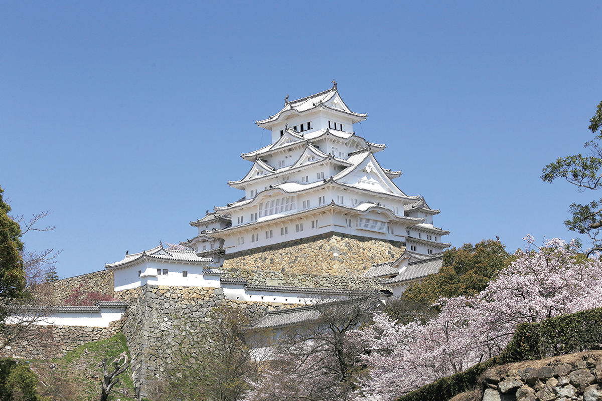
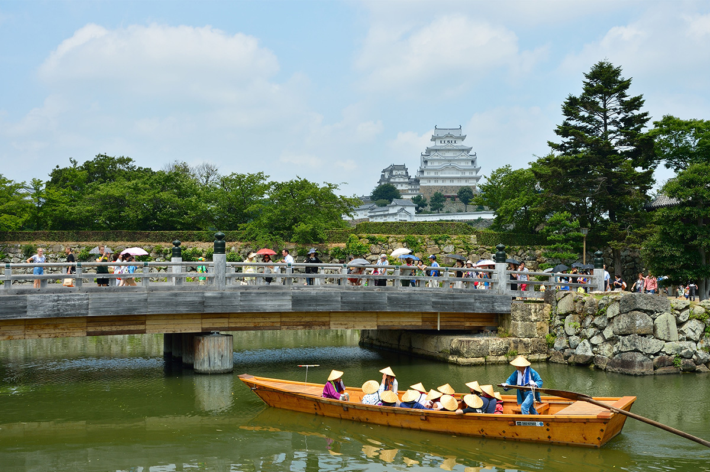
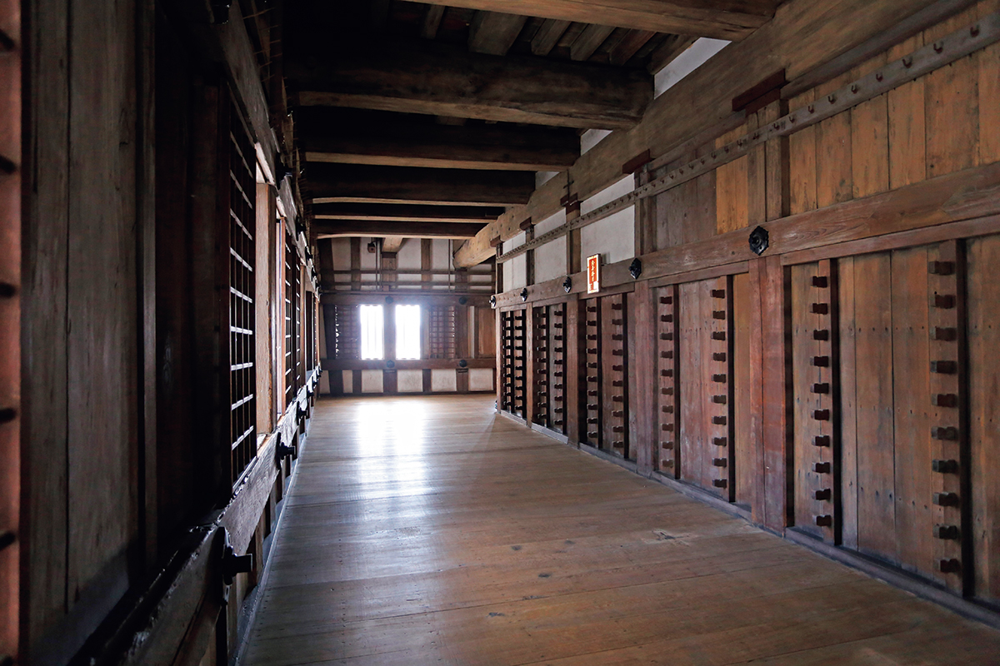
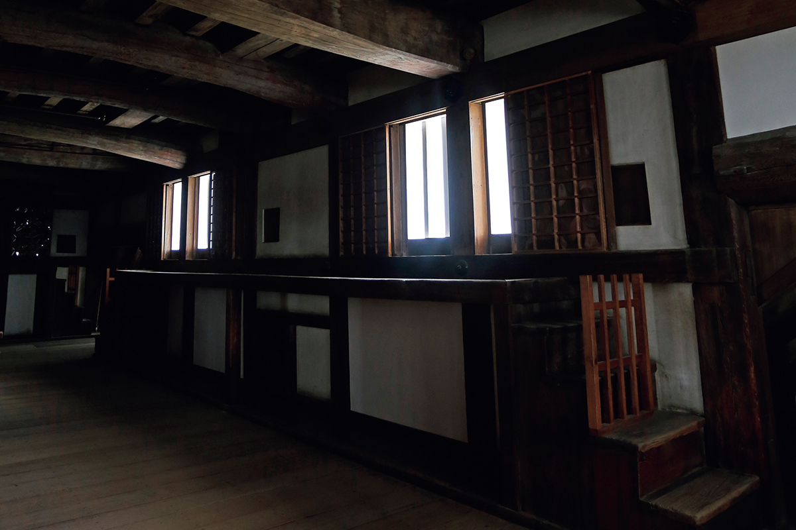
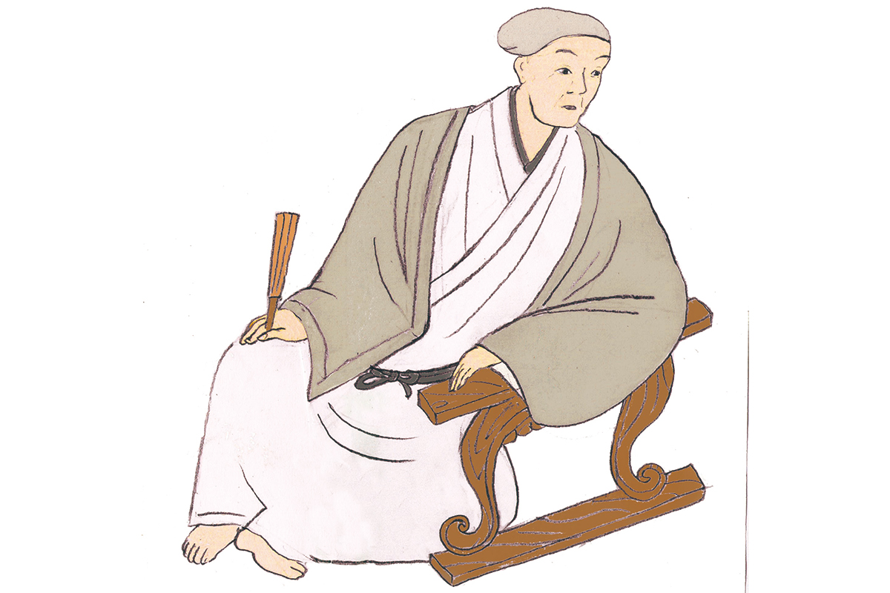
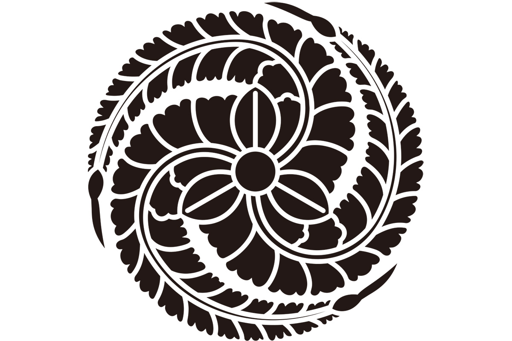

Префектура Хёго · Химэдзи · история
Замок Химэдзи и Камбэй Курода: как стратег отдал свой замок Хидэёси для похода на запад

Белоснежный замок Химэдзи знают все, кто хоть раз листал путеводитель по Японии. Гораздо реже вспоминают, что в 1577 году его хозяин просто отдал замок чужому полководцу и этим помог ему дойти до власти над всей страной.
1577–1580
Приказ Нобунаги: покорить запад
Во второй половине XVI века Япония жила в эпоху войн: власть сёгуна рухнула, и по всей стране воевали между собой местные князья. Сильнее всех оказался Нобунага Ода (1534–1582), полководец, который первым начал объединять страну силой оружия. К 1577 году он почти полностью подчинил себе Кинай, центральные провинции вокруг Киото, и стал рассылать своих лучших военачальников в разные стороны с приказом покорить соседние земли.
Запад, регион Тюгоку на западе острова Хонсю, достался Хидэёси Тоётоми (1537–1598). Выходец из самых низов, он дослужился у Нобунаги до одного из главных полководцев, а после его гибели сам объединил Японию. Рядом с Хидэёси всю жизнь был его младший брат Хидэнага Тоётоми (1540–1591), надёжный помощник и командир. В 2026 году именно Хидэнага стал главным героем большого исторического телесериала NHK, и интерес к братьям Тоётоми и связанным с ними замкам заметно вырос.

Стратег
Камбэй Курода отдаёт свой замок
Первым к Хидэёси пришёл с предложением союза Камбэй Курода (1546–1604), местный военачальник из Харимы, старой провинции на юго-западе нынешней префектуры Хёго. Его официальное имя Ёситака, но в историю он вошёл под именем Камбэй. Камбэй уступил Хидэёси свой замок Химэдзи и предложил помощь в покорении запада. Лучшего подарка Хидэёси и желать не мог: у него сразу появилась база в самом начале пути.
Хидэёси сделал Химэдзи своей ставкой и разделил войско надвое. Сам он с главными силами продолжил покорять Хариму, а Хидэнага повёл отдельный отряд на север, в Тадзиму, старую провинцию на севере нынешней Хёго. Так младший брат впервые стал командовать самостоятельной частью армии Хасибы: эту фамилию Хидэёси тогда носил, прежде чем стать Тоётоми.

В разгар похода Хидэёси написал Камбэю письмо со словами, которые часто цитируют историки:
«Ты мне так же близок и надёжен, как мой младший брат Коитиро»
Хидэёси Тоётоми в письме Камбэю Куроде
Коитиро было домашним именем Хидэнаги. Хидэёси, конечно, хотел польстить союзнику, но по письму видно и другое: на брата он полагался безоговорочно. Камбэй и Хидэнага, похоже, были для него одинаково надёжной опорой.

Замок
От небольшой крепости к белому замку
До эпохи Хидэёси Химэдзи, судя по всему, был скромной крепостью. Хидэёси перестроил его в настоящий замок нового типа, с каменными стенами и главной башней. Нынешний облик замок получил позже: после битвы при Сэкигахаре в 1600 году, решившей, кто будет править Японией, владельцем Химэдзи стал Тэрумаса Икэда (1565–1613). Он перестроил замок заново и покрыл стены белой известковой штукатуркой.
Камни эпохи Хидэёси в замке всё же сохранились: часть каменных стен осталась от его перестройки. Их интересно сравнить с кладкой, которую сделали позже, уже в эпоху Эдо (1603–1868).
Главная башня и три малые башни соединены переходами в единый комплекс, и внутрь башен можно зайти. Билет в 2026 году стоил 2500 иен.
Замок Химэдзи
- Адрес
- префектура Хёго, Химэдзи, Хонмати, 68
- Телефон
- +81 79-285-1146
- Часы работы
- 9:00–17:00 (вход до 16:00), меняются в зависимости от сезона
- Выходные
- 29–30 декабря
- Цены / Вход
- 2500 иен
Портрет
Кто такой Камбэй Курода

Камбэя называют одним из самых талантливых стратегов эпохи войн. Говорят, что за всю жизнь он участвовал в 50 сражениях и не проиграл ни одного. Хидэёси ценил его ум больше, чем ум любого другого вассала, и одновременно его побаивался. По преданию, именно Камбэй в 1582 году посоветовал Хидэёси немедленно выступить против Мицухидэ Акэти (1528?–1582), военачальника, который поднял мятеж и погубил Нобунагу. Без Камбэя, считают историки, Хидэёси вряд ли стал бы правителем всей Японии.
Хидэёси будто бы говорил: «Если Камбэй захочет, он возьмёт страну ещё при моей жизни». Наверное, поэтому, несмотря на огромные заслуги, Камбэй получил владения доходом всего в 120 000 коку риса, очень скромно для человека его ранга. После смерти Хидэёси он попытался воспользоваться смутой вокруг битвы при Сэкигахаре и сам побороться за власть, но из этого ничего не вышло.

Самые известные слова Камбэя
«Ничего на свете нет больше, чем людей. И ничего нет меньше, чем людей»
Камбэй Курода в разговоре с Хидэёси
Смысл фразы такой: людей вокруг множество, но тех, кому можно по-настоящему доверять, и тех, у кого есть настоящий талант, совсем немного.
За жизнь Камбэй сменил несколько имён. В детстве его звали Манкити, потом Ёситака Кодэра и Ёситака Курода, а в конце жизни он принял буддийское имя Дзёсуй.
Жизнь Камбэя по годам
- 1546. Родился в провинции Харима.
- 1567. Принял от отца, Мототаки Куроды, главенство в роду и должность старшего вассала клана Кодэра, женился на племяннице своего сюзерена Масамото Кодэры и стал управлять замком Химэдзи.
- 1577. Хидэёси вошёл в Хариму. Камбэй перевёз семью в соседний замок Коуяма, отдал Химэдзи Хидэёси и стал его советником.
- 1578. Военачальник Мурасигэ Араки (1535–1586) поднял мятеж против Нобунаги и заперся в замке Ариока. Камбэй поехал туда уговорить его одуматься, но сам оказался в плену.
- 1586–1597. Получил придворный ранг, участвовал в походе на остров Кюсю и взял несколько крепостей.
- 1590. Во время осады Одавары уговорил князей Ходзё, отца и сына, сдать замок без боя.
- 1597. Во время второго похода в Корею стоял с войском в Пусане как наблюдатель при главнокомандующем Хидэаки Кобаякаве (1582–1602).
- 1600. Битва при Сэкигахаре.
- 1604. Умер от болезни в Фусими, по другой версии в Хакате на Кюсю.
Фото: мэрия Химэдзи, Мария Араи.